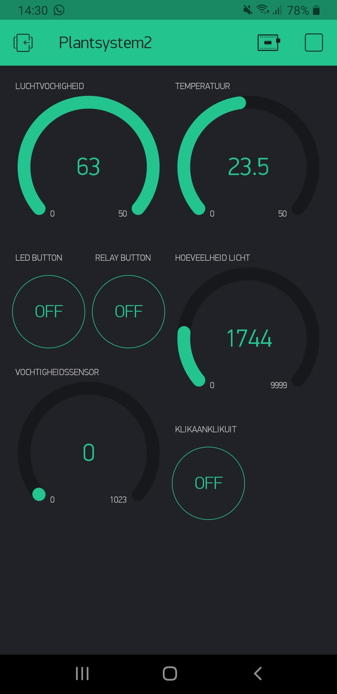

Zoals je hebt gezien is het mogelijk om met behulp van de Blynk-app de pomp en de lampen aan te zetten. Het is echter ook mogelijk om deze app te gebruiken als Dashboard.
Hierin kun je dan alle gegevens over je plant en huiskameromgeving zien. Denk aan de luchtvochtigheid, temperatuur, hoeveelheid licht en de vochtigheid van de plant.
Zie de volgende afbeelding voor een schreenshot van mijn app.

Zoals je ziet zijn de knoppen en het dashboard gecombineerd op één scherm. Deze keuze heb ik gemaakt om het complete overzicht te houden. De gegevens die hier in beeld zijn worden live bijgewerkt zodra ze veranderen.
In het volgende filmpje demonstreer ik hoe dat werkt.